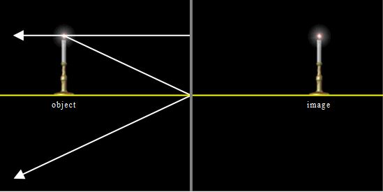

The Flat Mirror Model shows two principal rays leaving a candle of height h and striking a flat mirror. The first ray is parallel to the mirror surface and is reflected back on itself. The second ray strikes the mirror a distance h below the flame. The angle between the reflected ray and the surface normal is the same as that between the incident ray and the normal in accord with the principles of geometric optics. If the reflected rays are extended behind the mirror, the location of the virtual image is observed.
Drag the slider that controls the position of the candle base to observe the corresponding motion of the virtual image. The simple geometry shows that the reflection of a candle placed a distance d in front of a mirror will produce a candle image that is a distance d behind the mirror.
The Flat Mirror Model was developed by Wolfgang Christian, Francisco Esquembre, and Mario Belloni using the Easy Java Simulations (EJS) version 5.0 authoring and modeling tool.